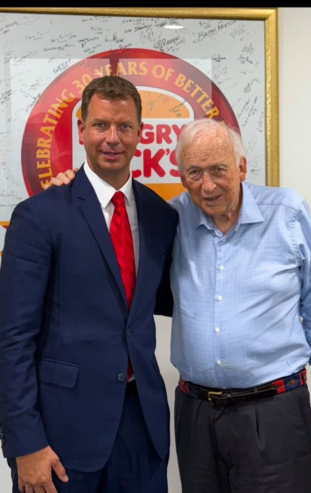
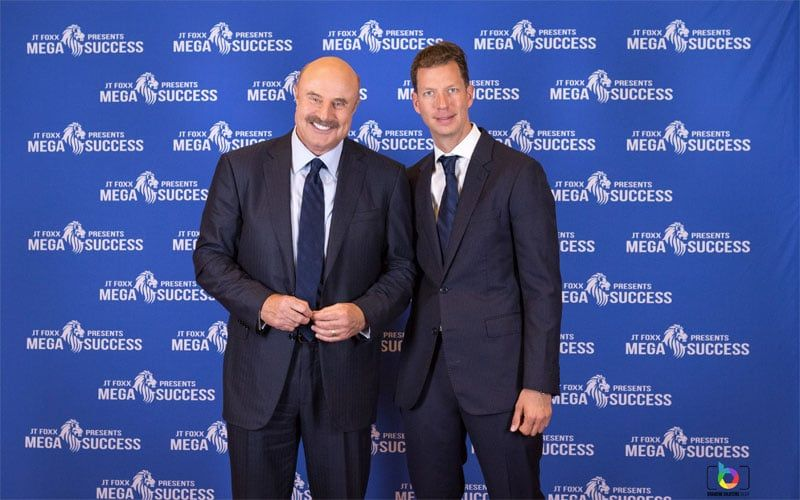
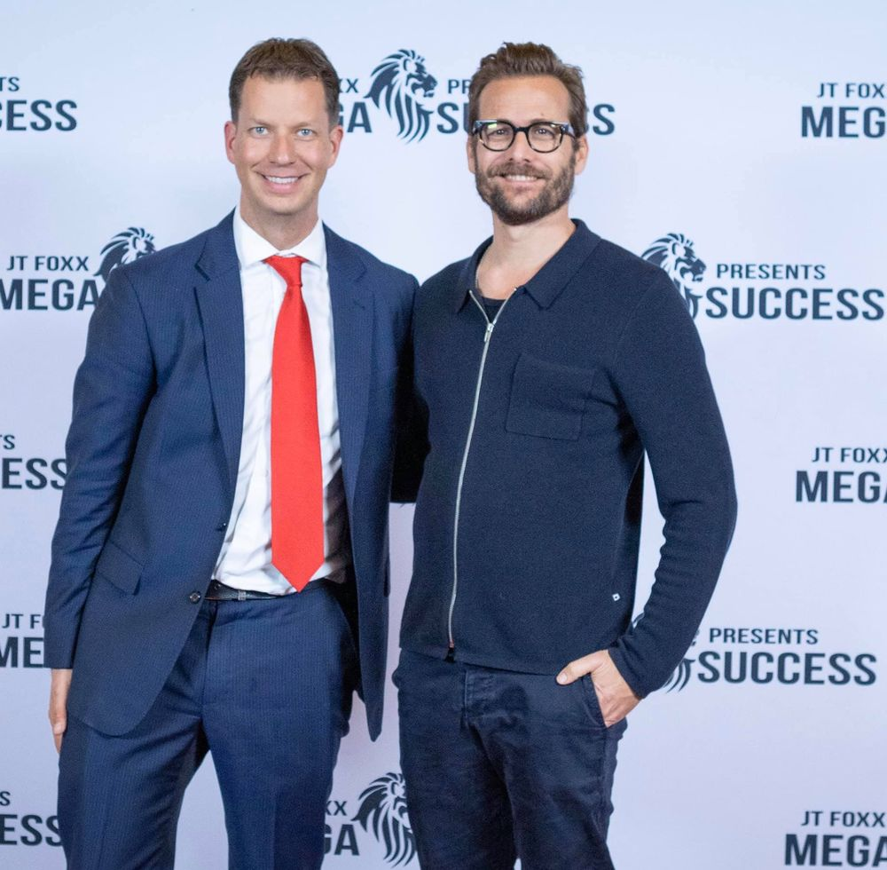
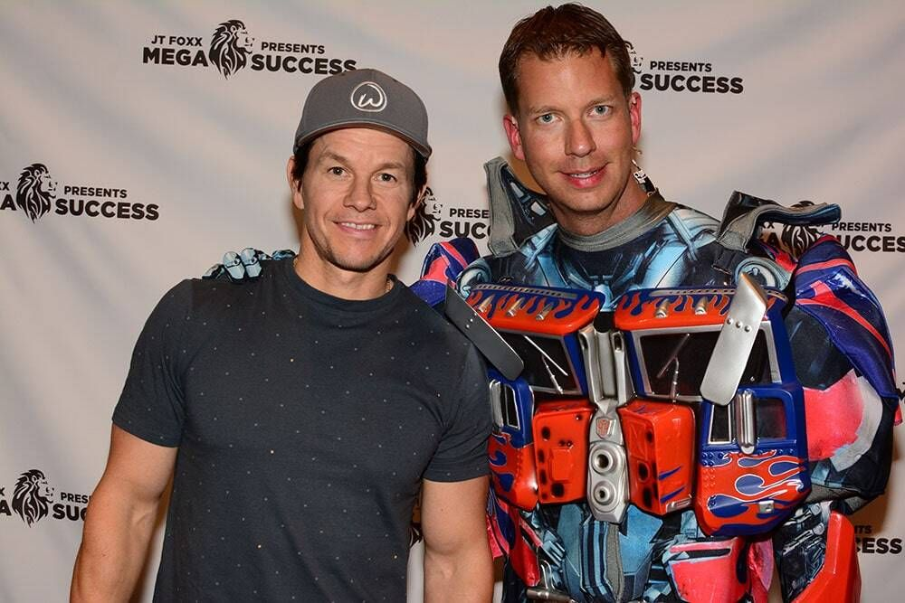
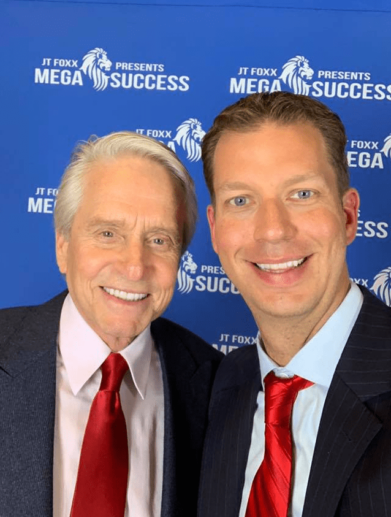
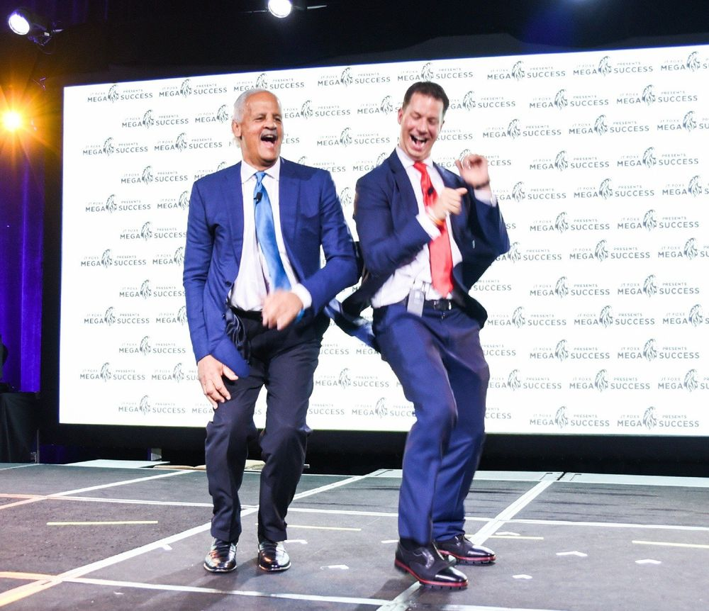
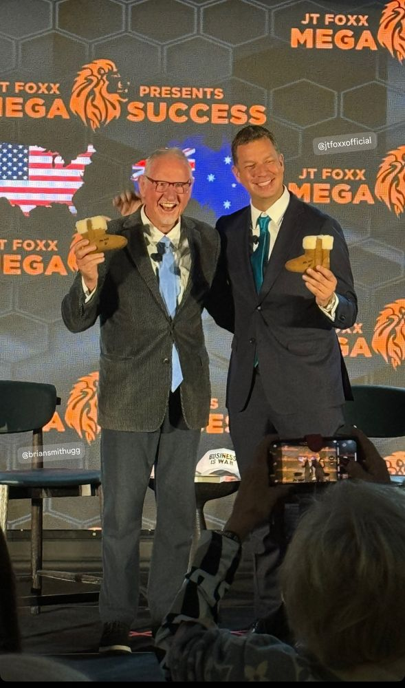
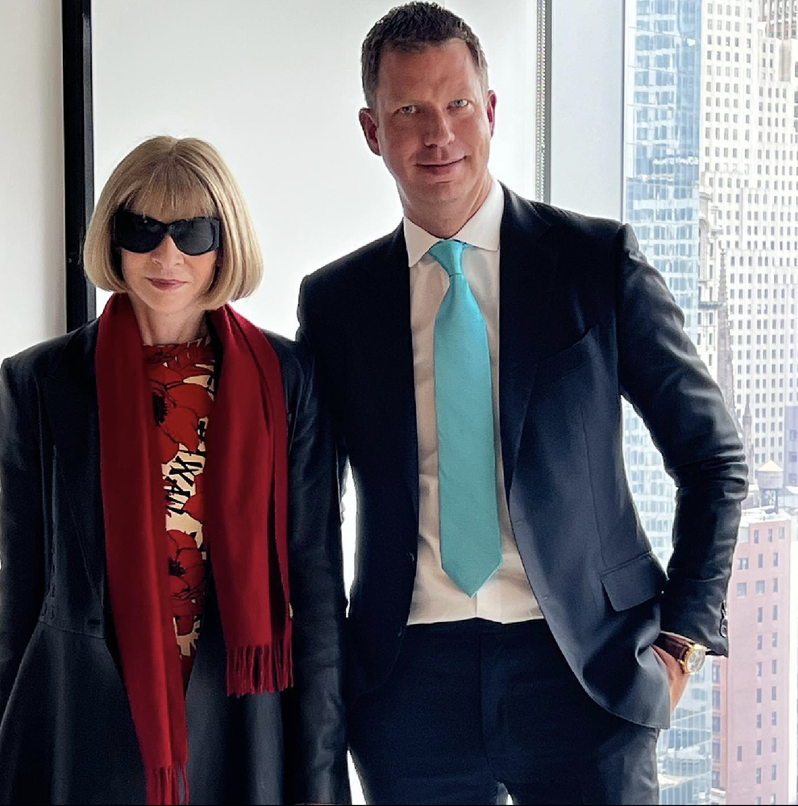
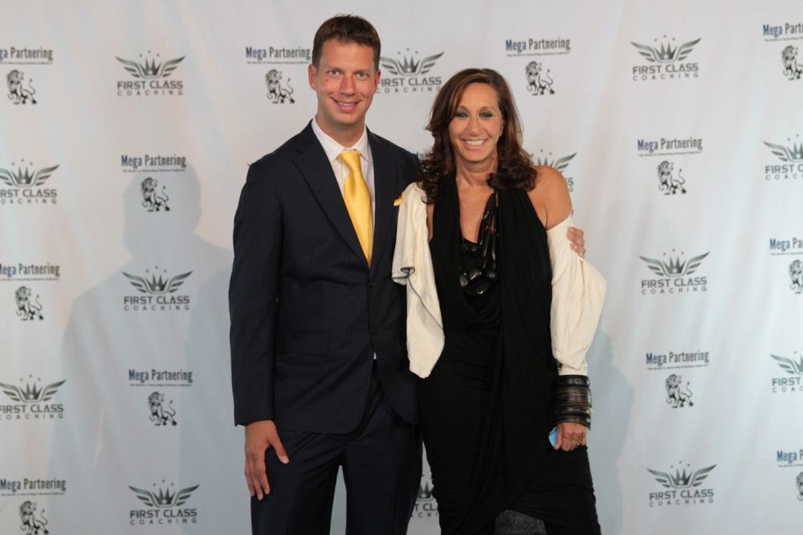

Celebrity Moments
Notable Connections
Photos and moments will be added here as they're confirmed.
The Billionaires

John Catsimatidis
Red Apple Group

Tommy Hilfiger
Tommy Hilfiger

Alec Gores
The Gores Group

Jack Cowin
Competitive Foods Australia

Howard Schultz
Starbucks

Oprah Winfrey
Harpo Productions / OWN
Hollywood A-Listers

Dr. Phil McGraw
Television Host

Gabriel Macht
Actor

John Travolta
Actor

Mark Wahlberg
Actor / Producer

Michael Douglas
Actor

Stedman Graham
Author / Speaker
The CEOs

Brian Smith
Founder, UGG

Anna Wintour
Editor, Vogue

Donna Karan
Founder, DKNY

Mark Cuban
Investor, Shark Tank

Michael Eisner
Former CEO, The Walt Disney Company

Steve Wozniak
Co-founder, Apple